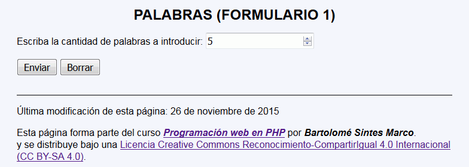
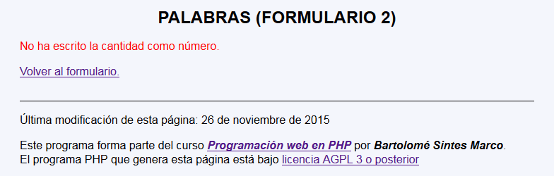
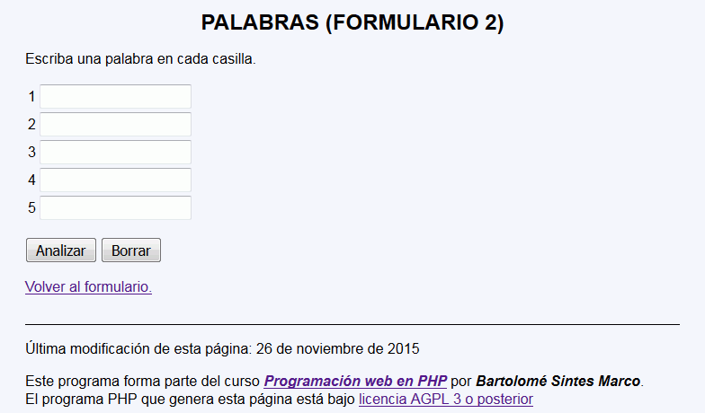
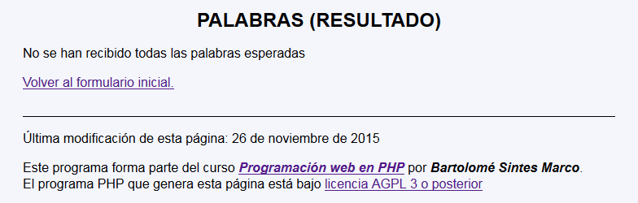
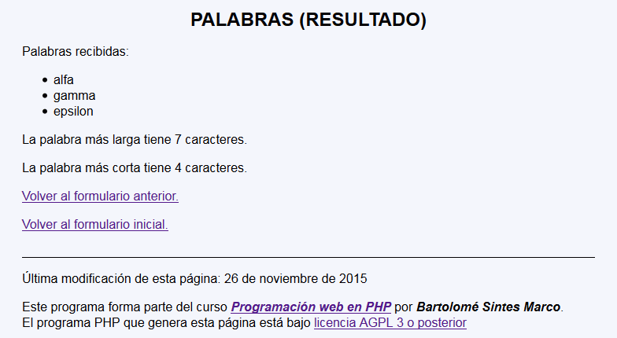

En este ejercicio se debe crear un programa que permita escribir una cantidad de palabras y escriba cuántas letras tiene la palabra más larga y la más corta:
Palabras - Comentarios
El programa tendrá tres páginas:
La primera página pide el número de palabras (entre 1 y 20):

La segunda página comprueba primero el valor recibido:

En el caso de que el valor sea correcto, la segunda página muestra las cajas de texto solicitados:

La tercera página comprueba primero que no se ha manipulado la dirección borrando algún dato. No es necesario comprobar que no hay espacios en blanco ni números, sólo hay que comprobar que no falta ningún control.

En caso de que los valores sean correctos, la tercera página muestra las palabras recibidas (no muestra las vacías) y dice cuántas letras tiene la cadena más larga y la más corta:

Para calcular la longitud de una cadena se puede utilizar la función strlen($cadena) que devuelve el número de caracteres de la cadena.
 No es necesario comprobar que no hay espacios en blanco ni números, sólo hay que comprobar que no falta ningún control.
No es necesario comprobar que no hay espacios en blanco ni números, sólo hay que comprobar que no falta ningún control.